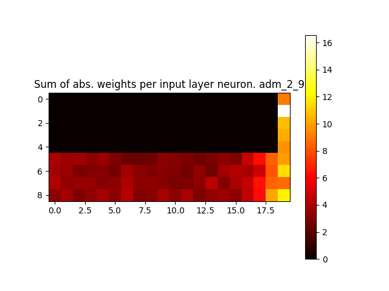
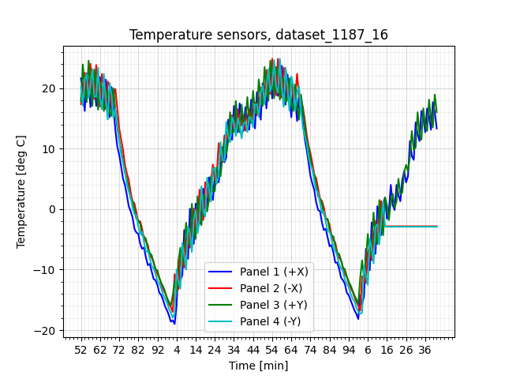
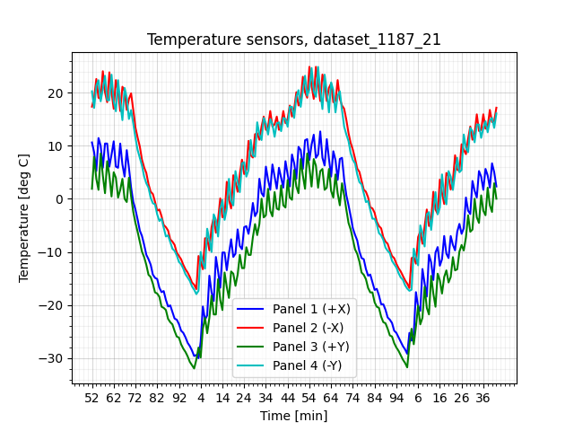
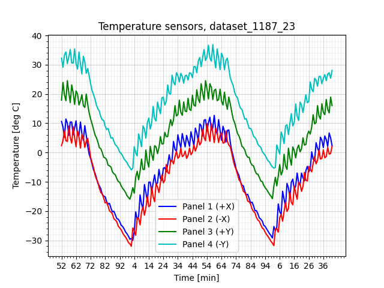
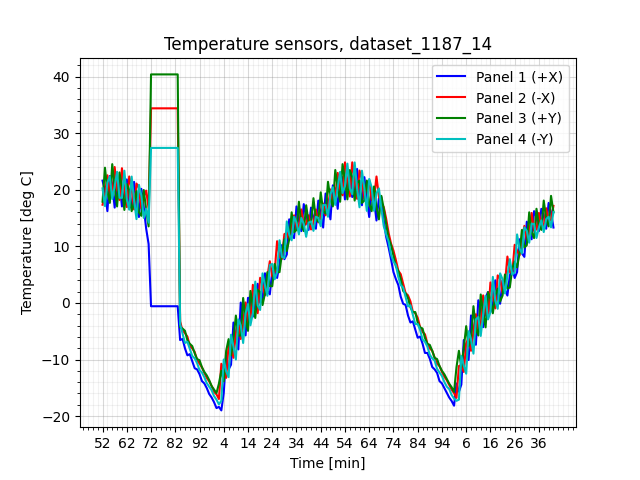
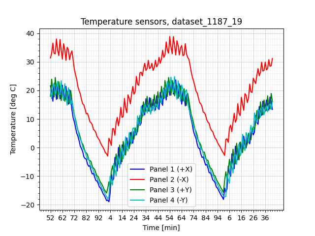
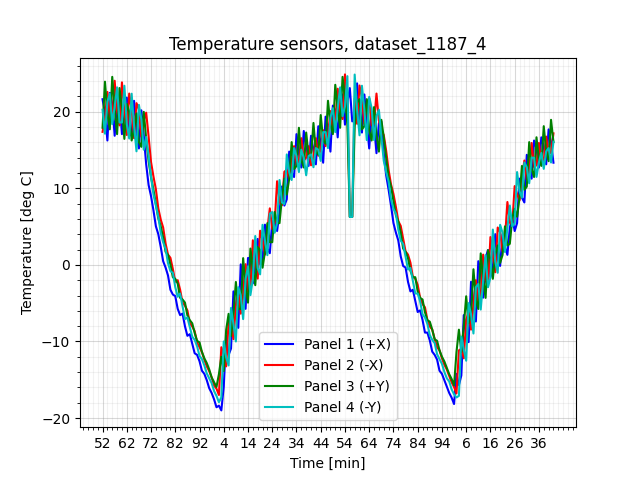
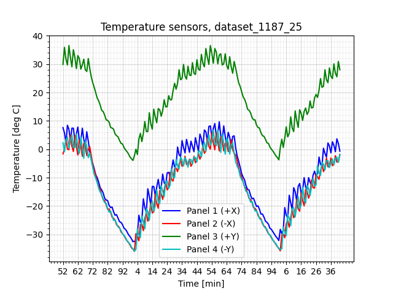
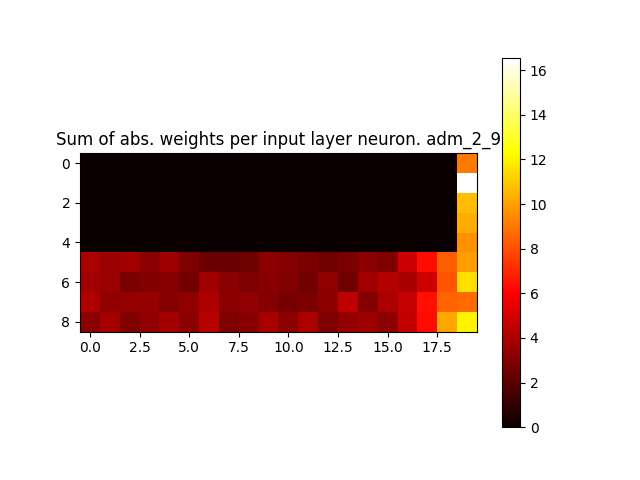
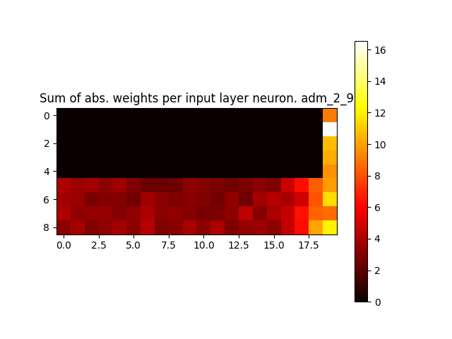

Model name: adm_2_1 (No threshold. follows anomalies. value limits 1/0 applied. Normalization applied. Slope output panel 1 added.)
Model type: MLP
Model description: 60x32x32x32x3 MLP to detect based on the previous 20 points from 3 panels, and predict the next point on panel 1 and estimate panel 1 slope. Trained to detect sensor spikes and costant regions, temperature shifts and bumps. Tested on previously unseen data. Has 20 clock readings at the input.
Model data size: NA
Test results:
Accuracy on NO anomalies (0): 0.9961
Accuracy on ANOMALIES (1): 0.9547

Figure 1: model inferences on dataset_1187_0_sens.png
Figure 2: model inferences on dataset_1187_20_sens.png

Figure 3: model inferences on dataset_1187_16_sens.png
Figure 4: model inferences on dataset_1187_9_sens.png
Figure 5: model inferences on dataset_1187_17_sens.png
Figure 6: model inferences on dataset_1187_8_sens.png

Figure 7: model inferences on dataset_1187_21_sens.png
Figure 8: model inferences on dataset_1187_1_sens.png
Figure 9: model inferences on dataset_1187_15_sens.png

Figure 10: model inferences on dataset_1187_23_sens.png
Figure 11: model inferences on dataset_1187_3_sens.png
Figure 12: model inferences on dataset_1187_2_sens.png
Figure 13: model inferences on dataset_1187_22_sens.png

Figure 14: model inferences on dataset_1187_14_sens.png
Figure 15: model inferences on dataset_1187_11_sens.png
Figure 16: model inferences on dataset_1187_7_sens.png
Figure 17: model inferences on dataset_1187_18_sens.png
Figure 18: model inferences on dataset_1187_6_sens.png

Figure 19: model inferences on dataset_1187_19_sens.png
Figure 20: model inferences on dataset_1187_10_sens.png
Figure 21: model inferences on dataset_1187_24_sens.png

Figure 22: model inferences on dataset_1187_4_sens.png
Figure 23: model inferences on dataset_1187_12_sens.png
Figure 24: model inferences on dataset_1187_13_sens.png
Figure 25: model inferences on dataset_1187_5_sens.png

Figure 26: model inferences on dataset_1187_25_sens.png
 
